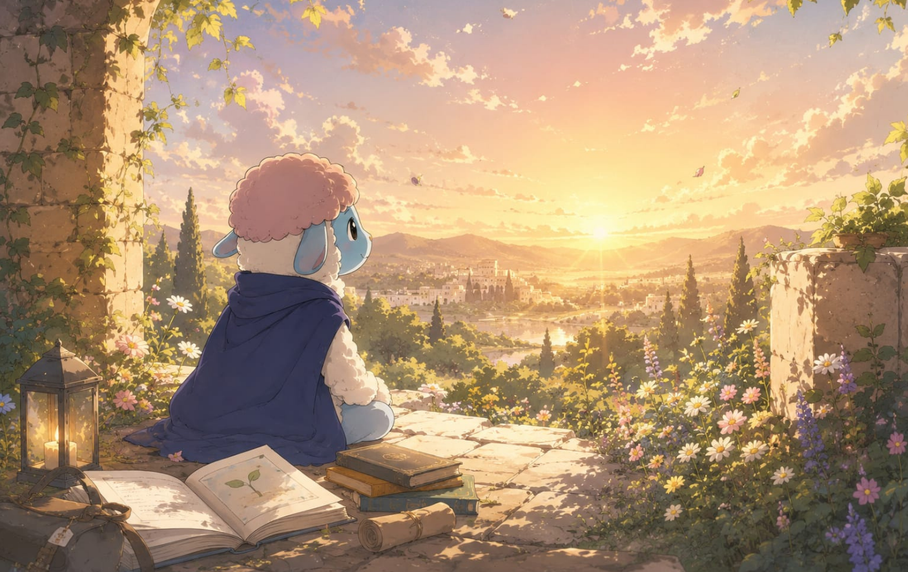

Mes de TAMUZ • 2026
Tema del mes
En este tiempo compartimos esta alabanza para escuchar durante el mes de Tamuz y recordar que, en medio de las preocupaciones diarias, podemos encontrar paz si fijamos nuestra mirada en Cristo.
Un espacio dedicado a profundizar en las escrituras, compartir revelaciones y caminar en comunidad.
Mes de TAMUZ • 2026
En este tiempo compartimos esta alabanza para escuchar durante el mes de Tamuz y recordar que, en medio de las preocupaciones diarias, podemos encontrar paz si fijamos nuestra mirada en Cristo.

Mes de TAMUZ • 2026
Una invitación a descubrir quién está contigo en la tormenta.